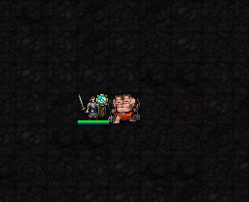

밝고 뚜렷하게 수정 · 조각 전환

밝은 옥색 속과 금빛 테두리의 14×14px 전시 문양. 실제 게임에서 시전 직후와 유지 상태를 다시 캡처했습니다.
회화·조각·공예 중 하나를 전시해 가호를 바꿉니다.
가호 해금: 신앙 ★30 · 최소 기도술 제한 없음
전환 비용: MP1 · 신앙0 · 행동1턴
일반 상태에서는 매 턴 다시 전환 가능. 같은 작품 재선택 불가, 5성 특별전 중에는 전환 불가.

밝은 옥색 속과 금빛 테두리의 14×14px 전시 문양. 실제 게임에서 시전 직후와 유지 상태를 다시 캡처했습니다.

세 작품은 현재 공통 전시 문양을 사용합니다. 머리 오른쪽 위에 표시되며 캐릭터의 얼굴을 가리지 않습니다.
| 전시 | 현재 적용 효과 |
|---|---|
| 회화 · 기본 전시 | 피해를 준 살아 있는 적에게 채색1중첩, 최대3 · 마지막 갱신 후6턴 유지. 이미 채색된 적을 다시 때리면 추가 마법 피해 1d(2+⌊I/6⌋) → 1~4. 추가 피해가 중첩 수만큼 배증하지는 않습니다. 채색은 3성 폭발에도 사용합니다. |
| 조각 | AC +2+⌊I/9⌋ → +3. |
| 공예 | 직접 일반 공격으로 적을 처치하면 HP 2+⌊I/6⌋ → 4 회복. 회복 재발동 간격2턴. |
각 작품에 대응하는 3성 권능을 쓰면 해당 작품은 회복 시간 동안 1성 가호도 쉬어갑니다. 그때 다른 작품으로 전환할 수 있습니다.
루이 1·3·5성 확정 완료. 현재 라덴 1성 검토 중입니다. 22신 시각 작업을 먼저 끝낸 뒤 중간 패시브·성급 배치를 재검토하는 계획은 유지합니다.